<!DOCTYPE html>
<html>
  <head>
    <title>Overhaul — 2011 BMW 128i Coupe (E82) L6-3.0L (N52K) Service Manual | Operation CHARM</title>
    <meta name='description' content="Detailed repair manual for the 2011 BMW 128i Coupe (E82) L6-3.0L (N52K).">
    <link rel='stylesheet' href="../style.css">
    <meta name='viewport' content='width=device-width, initial-scale=1.0' />
  </head>
  <body>
    <div class='theme-colors header'>
      <div class='branding'><b>Operation CHARM</b>: Car repair manuals for everyone.</div>
<div class=breadcrumbs><a class='breadcrumb-part' href="../">Home</a> <b>&gt;&gt;</b> <a class='breadcrumb-part' href="../BMW/">BMW</a> <b>&gt;&gt;</b> <a class='breadcrumb-part' href="../BMW/2011/">2011</a> <b>&gt;&gt;</b> <a class='breadcrumb-part' href="../index.html">128i Coupe (E82) L6-3.0L (N52K)</a> <b>&gt;&gt;</b> <a class='breadcrumb-part' href="0.html">Repair and Diagnosis</a> <b>&gt;&gt;</b> <a class='breadcrumb-part' href="0.html#Engine%2C%20Cooling%20and%20Exhaust/">Engine, Cooling and Exhaust</a> <b>&gt;&gt;</b> <a class='breadcrumb-part' href="0.html#Engine%2C%20Cooling%20and%20Exhaust/Engine/">Engine</a> <b>&gt;&gt;</b> <a class='breadcrumb-part' href="0.html#Engine%2C%20Cooling%20and%20Exhaust/Engine/Service%20and%20Repair/">Service and Repair</a> <b>&gt;&gt;</b> <a class='breadcrumb-part' href="381.html">Overhaul</a></div></div>
<div class="theme-colors floaty-message lemon-message">
  <b style="font-size: 1.5em; color: gold">Manuals through 2025 now available!</b>
  <br><br>
  Our trusted friends have launched a new website named LEMON, which has newer manuals. It also contains all the CHARM manuals.
  <br><br>
  LEMON is the spiritual successor to  CHARM, I recommend you try it!
  <br><br>
  Link: <a style='white-space: nowrap' href="../missing-page">lemon-manuals.la</a> or <a style='white-space: nowrap' href="../missing-page">lemon-manuals.org.ua</a>
  <br><br>
  (Some people have issue connecting. LEMON is investigating. For now, use Firefox or change your DNS server)
  <br><br>
  Or, hide this message: <a href="../missing-page">temporarily</a> or <a href="../missing-page">permanently</a>
</div>
<div class='main'>
<h1>Overhaul</h1><b>11 21 505 Sealing the crankcase's lower part (N52K)</b><br><br><span class='indent-2'>&#09;</span><b>Special tools required:</b><br><br><div class='oxe-image'></div><br><br><br><br><span class='indent-2'>&#09;</span><b>Important!</b><br><span class='indent-5'>&#09;</span>Aluminum-magnesium materials.<br><span class='indent-5'>&#09;</span>No steel screws/bolts may be used due to the threat of electrochemical corrosion.<br><span class='indent-5'>&#09;</span>A magnesium crankcase requires aluminum screws/bolts exclusively.<br><span class='indent-5'>&#09;</span>Aluminum screws/bolts must be replaced each time they are released.<br><span class='indent-5'>&#09;</span>Aluminum screws/bolts are permitted with and without color coding (blue).<br><span class='indent-5'>&#09;</span>For reliable identification:<br><span class='indent-5'>&#09;</span>Aluminum screws/bolts are not magnetic.<br><span class='indent-5'>&#09;</span>Risk of damage!<br><span class='indent-5'>&#09;</span>Joining torque and angle of rotation must be observed without fail.<br><br><div class='oxe-image'></div><br><br><br><br><span class='indent-2'>&#09;</span><b>Important!</b><br><span class='indent-5'>&#09;</span>Changed procedure.<br><span class='indent-5'>&#09;</span>It is not necessary to remove the cylinder head and the <a href="296.html">crankshaft</a>.<br><br><span class='indent-2'>&#09;</span><b>Necessary preliminary tasks:</b><br><span class='indent-2'>&#09;</span>^<span class='indent-5'>&#09;</span>Remove engine.<br><span class='indent-2'>&#09;</span>^<span class='indent-5'>&#09;</span>Mount engine on assembly stand.<br><br><div class='oxe-image'></div><br><br><br><br><span class='indent-2'>&#09;</span>^<span class='indent-5'>&#09;</span>Remove clutch (if fitted).<br><span class='indent-2'>&#09;</span>^<span class='indent-5'>&#09;</span>Remove left and right engine support arm<br><span class='indent-2'>&#09;</span>^<span class='indent-5'>&#09;</span>Remove oil sump.<br><br><div class='oxe-image'>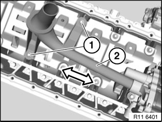</div><br><br><br><br><span class='indent-2'>&#09;</span>Release screws (1).<br><br><span class='indent-2'>&#09;</span>Pull out oil pump intake pipe (2).<br><br><span class='indent-2'>&#09;</span>Tightening torque: 11 13<br><br><div class='oxe-image'>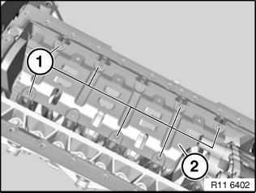</div><br><br><br><br><span class='indent-2'>&#09;</span>Release screws (1).<br><br><span class='indent-2'>&#09;</span>Tightening torque: 11 13 6AZ.<br><br><span class='indent-2'>&#09;</span><b>Installation:</b><br><span class='indent-2'>&#09;</span>Replace aluminum screws.<br><br><span class='indent-2'>&#09;</span>Remove oil deflector (2).<br><br><div class='oxe-image'>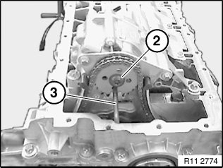</div><br><br><br><br><span class='indent-2'>&#09;</span>Secure oil pump sprocket with steel pin diameter 6.0 mm (3) to oil pump.<br><br><span class='indent-2'>&#09;</span><b>Important!</b><br><span class='indent-5'>&#09;</span>Release central bolt (2) only together with steel pin diameter 6.0 mm (3).<br><span class='indent-5'>&#09;</span>Do not remove sprocket.<br><br><span class='indent-2'>&#09;</span>Release central bolt (2).<br><br><span class='indent-2'>&#09;</span>Tightening torque: 11 41 6AZ.<br><br><span class='indent-2'>&#09;</span>Unfasten screws (2).<br><br><span class='indent-2'>&#09;</span>Tightening torque: 11 41 5AZ.<br><br><span class='indent-2'>&#09;</span><b>Installation:</b><br><span class='indent-2'>&#09;</span>Replace aluminum screws.<br><br><div class='oxe-image'>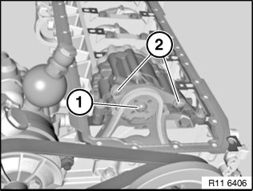</div><br><br><br><div class='oxe-image'>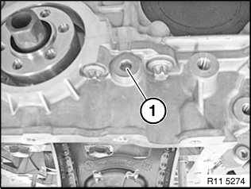</div><br><br><br><br><span class='indent-2'>&#09;</span>Remove screw plug (1) from crankcase at front.<br><br><span class='indent-2'>&#09;</span><b>Note:</b><br><span class='indent-2'>&#09;</span>Replace gasket.<br><br><div class='oxe-image'>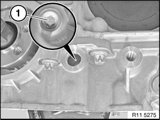</div><br><br><br><br><span class='indent-2'>&#09;</span>Release screw (1) for oil pump triangular drive with special tool 11 8 640.<br><br><span class='indent-2'>&#09;</span><b>Note:</b><br><span class='indent-2'>&#09;</span>It is not necessary to remove the triangular drive.<br><br><div class='oxe-image'>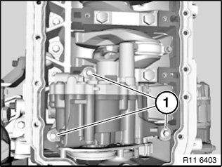</div><br><br><br><br><span class='indent-2'>&#09;</span><b>Version 1:</b><br><br><span class='indent-2'>&#09;</span><b>Important!</b><br><span class='indent-2'>&#09;</span>Observe different screw lengths.<br><br><span class='indent-2'>&#09;</span>Release screws (1).<br><br><span class='indent-2'>&#09;</span>Tightening torque 11 41 2AZ.<br><br><span class='indent-2'>&#09;</span>Tightening torque 11 41 3AZ.<br><br><span class='indent-2'>&#09;</span><b>Installation:</b><br><span class='indent-2'>&#09;</span>Replace aluminum screws.<br><br><span class='indent-2'>&#09;</span><b>Version 2:</b><br><br><span class='indent-2'>&#09;</span><b>Important!</b><br><span class='indent-2'>&#09;</span>Observe different screw lengths.<br><br><span class='indent-2'>&#09;</span>Release oil pump screws (1).<br><br><span class='indent-2'>&#09;</span>Tightening torque: 11 41 2AZ.<br><br><div class='oxe-image'>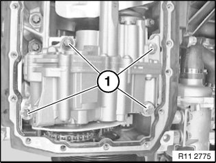</div><br><br><br><br><span class='indent-2'>&#09;</span><b>Installation:</b><br><span class='indent-2'>&#09;</span>Replace aluminum screws.<br><br><div class='oxe-image'>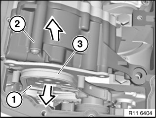</div><br><br><br><br><span class='indent-2'>&#09;</span>Detach sprocket (1) in direction of arrow.<br><br><span class='indent-2'>&#09;</span><b>Note:</b><br><span class='indent-2'>&#09;</span>The chain tensioner pushes the <a href="354.html">timing chain</a> (3) of the triangular drive upward.<br><br><span class='indent-2'>&#09;</span>Do not remove camshaft sprocket.<br><br><span class='indent-2'>&#09;</span>Remove oil pump (2) in direction of arrow.<br><br><div class='oxe-image'>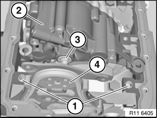</div><br><br><br><br><span class='indent-2'>&#09;</span><b>Installation:</b><br><span class='indent-2'>&#09;</span>Check spacer bushings (1) for secure seating and damage; replace if necessary.<br><br><span class='indent-2'>&#09;</span>Align twin surface (3) on oil pump (2) to sprocket wheel.<br><br><span class='indent-2'>&#09;</span>Install oil pump (2).<br><br><div class='oxe-image'>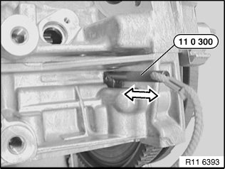</div><br><br><br><br><span class='indent-2'>&#09;</span><b>Note:</b><br><span class='indent-2'>&#09;</span>The special tool bore for the TDC position is located on the inlet side underneath the starter motor.<br><br><span class='indent-2'>&#09;</span>Rotate engine at central bolt and secure flywheel in position with special tool 11 0 300.<br><br><span class='indent-2'>&#09;</span>Secure flywheel with special tool (1) 11 9 260 and special tool (2) 11 9 266.<br><br><span class='indent-2'>&#09;</span>Tightening torque<br><br><span class='indent-2'>&#09;</span><b>Note:</b><br><span class='indent-2'>&#09;</span>Make sure that the special tool (1) completely engages in the flywheel teeth (see arrow)<br><br><div class='oxe-image'>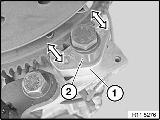</div><br><br><br><div class='oxe-image'>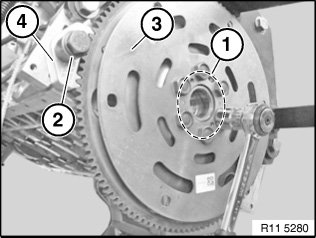</div><br><br><br><br><span class='indent-2'>&#09;</span><b>Automatic transmission:</b><br><span class='indent-2'>&#09;</span>Release flywheel bolts (1).<br><br><span class='indent-2'>&#09;</span>Release special tool (2).<br><br><span class='indent-2'>&#09;</span>Remove flywheel (3).<br><br><div class='oxe-image'>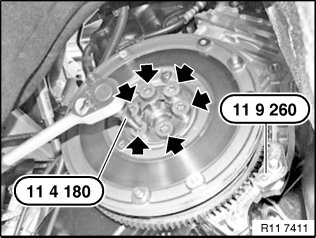</div><br><br><br><br><span class='indent-2'>&#09;</span><b>Manual gearbox:</b><br><br><span class='indent-2'>&#09;</span><b>Important!</b><br><span class='indent-5'>&#09;</span>Position <a href="296.html">crankshaft</a> at TDC.<br><br><span class='indent-2'>&#09;</span>Remove dual-mass flywheel.<br><br><span class='indent-2'>&#09;</span>Secure flywheel with special tool 11 9 260.<br><br><span class='indent-2'>&#09;</span>Remove vibration damper.<br><br><span class='indent-2'>&#09;</span>Release flywheel bolts with special tool 11 4 180/<br><br><div class='oxe-image'>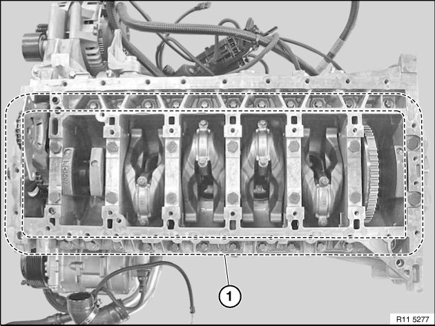</div><br><br><br><br><span class='indent-2'>&#09;</span>Release all crankcase bolts (1) along line (2).<br><br><div class='oxe-image'></div><br><br><br><br><span class='indent-2'>&#09;</span>Release crankcase bolts M10 in sequence 14 to 1.<br><br><div class='oxe-image'>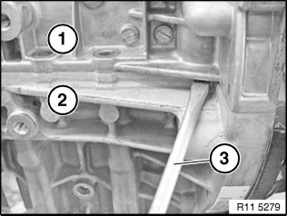</div><br><br><br><br><span class='indent-2'>&#09;</span>Release crankcase lower section (1) from crankcase upper section (2) with suitable tool (3)<br><br><span class='indent-2'>&#09;</span>Remove crankcase lower section (1) upwards.<br><br><span class='indent-2'>&#09;</span><b>Important!</b><br><span class='indent-5'>&#09;</span>Do not rotate <a href="296.html">crankshaft</a> without crankcase lower section (1) (risk of damage).<br><br><div class='oxe-image'>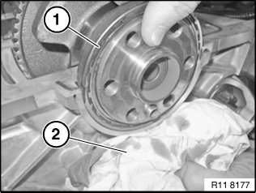</div><br><br><br><br><span class='indent-2'>&#09;</span><b>Important!</b><br><span class='indent-5'>&#09;</span><a href="354.html">Timing chain</a> is pre-tensioned.<br><span class='indent-5'>&#09;</span>Do not raise <a href="296.html">crankshaft</a>.<br><br><span class='indent-2'>&#09;</span>Carefully remove radial shaft seal (1).<br><br><span class='indent-2'>&#09;</span>Catch escaping engine oil with a cloth (2).<br><br><div class='oxe-image'>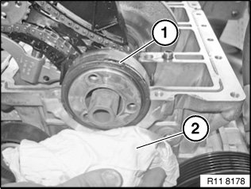</div><br><br><br><br><span class='indent-2'>&#09;</span>Carefully remove radial shaft seal (1) towards front.<br><br><span class='indent-2'>&#09;</span>Catch escaping engine oil with a cloth (2).<br><br><div class='oxe-image'>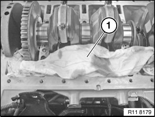</div><br><br><br><br><span class='indent-2'>&#09;</span><b>Important!</b><br><span class='indent-5'>&#09;</span>Protect crankcase against sealant residues with a cloth (1).<br><br><div class='oxe-image'>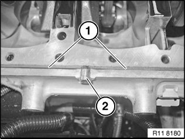</div><br><br><br><br><span class='indent-2'>&#09;</span>Remove sealant residues (1) with special tool 11 4 470.<br><br><span class='indent-2'>&#09;</span>Remove injector nozzles (2) for liquid sealing compound on left and right.<br><br><span class='indent-2'>&#09;</span><b>Installation:</b><br><span class='indent-2'>&#09;</span>Replace injector nozzles (2).<br><br><span class='indent-2'>&#09;</span>Clean all threads with compressed air.<br><br><div class='oxe-image'>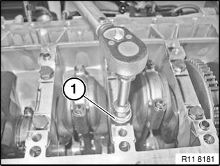</div><br><br><br><br><span class='indent-2'>&#09;</span>Position crankcase lower section (1) on crankcase upper section.<br><br><span class='indent-2'>&#09;</span>Screw in all M10 crankcase bolts.<br><br><span class='indent-2'>&#09;</span>Joint all M10 crankcase bolts (1) 20 Nm from inside outwards.<br><br><span class='indent-2'>&#09;</span>Identify all M10 crankcase bolts with a colored marking (1) for checking.<br><br><div class='oxe-image'>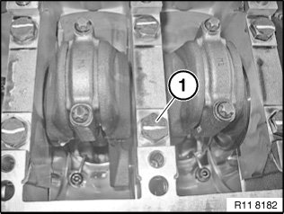</div><br><br><br><div class='oxe-image'>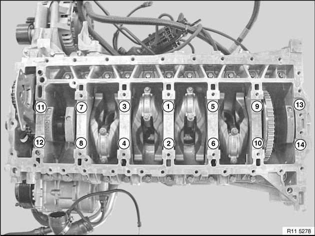</div><br><br><br><br><span class='indent-2'>&#09;</span>Secure crankcase bolts M10 in sequence 1 to 14 with special tool 00 9 120.<br><br><span class='indent-2'>&#09;</span>Tightening torque: 11 11 1AZ.<br><br><div class='oxe-image'></div><br><br><br><br><span class='indent-2'>&#09;</span>Insert all crankcase bolts (1).<br><br><span class='indent-2'>&#09;</span><b>Important!</b><br><span class='indent-2'>&#09;</span>Observe different lengths and sizes of the bolts.<br><br><span class='indent-2'>&#09;</span>Tightening torque: 11 11 2, 3 and 4AZ.<br><br><div class='oxe-image'></div><br><br><br><br><span class='indent-2'>&#09;</span>Tighten screw (1) for oil pump triangular drive with special tool 11 8 640.<br><br><span class='indent-2'>&#09;</span><b>Note:</b><br><span class='indent-2'>&#09;</span>Replace screw.<br><br><span class='indent-2'>&#09;</span>Tightening torque: 11 41 4 AZ.<br><br><span class='indent-2'>&#09;</span>Tighten screw plug on front of crankcase.<br><br><span class='indent-2'>&#09;</span>Tightening torque: 11 11 8 AZ.<br><br><span class='indent-2'>&#09;</span><b>Installation:</b><br><span class='indent-2'>&#09;</span>Replace sealing ring.<br><br><div class='oxe-image'></div><br><br><br><div class='oxe-image'>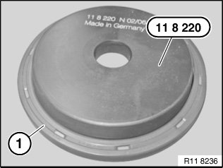</div><br><br><br><br><span class='indent-2'>&#09;</span>Prepare radial shaft seal (1) on special tool 11 8 220.<br><br><div class='oxe-image'>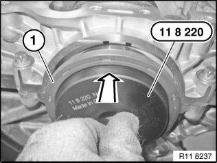</div><br><br><br><br><span class='indent-2'>&#09;</span>Position radial shaft seal (1) with special tool 11 8 220 on the <a href="296.html">crankshaft</a>.<br><br><div class='oxe-image'>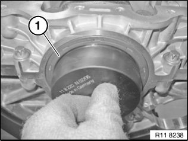</div><br><br><br><br><span class='indent-2'>&#09;</span>Brush radial shaft seal (1) over the special tool 11 8 220.<br><br><span class='indent-2'>&#09;</span>Move radial shaft seal (1) parallel up against the crankcase.<br><br><span class='indent-2'>&#09;</span>Screw special tool 11 9 182 with screws (special tool 11 9 184 ) to <a href="296.html">crankshaft</a>.<br><br><div class='oxe-image'>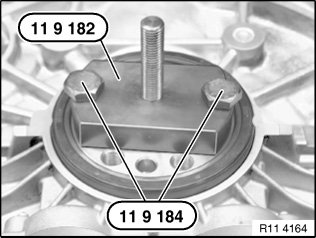</div><br><br><br><div class='oxe-image'>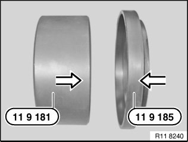</div><br><br><br><br><span class='indent-2'>&#09;</span><b>Installation:</b><br><span class='indent-2'>&#09;</span>Prepare special tool 11 9 181 for installation. Connect special tool 11 9 185 onto special tool 11 8 181.<br><br><div class='oxe-image'>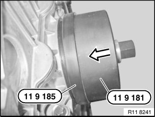</div><br><br><br><br><span class='indent-2'>&#09;</span>Pull on radial shaft seal with special tool 11 9 181 and 11 9 185 in combination with special tool 11 9 183.<br><br><div class='oxe-image'>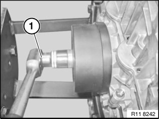</div><br><br><br><br><span class='indent-2'>&#09;</span>Screw on radial shaft seal with special tool 11 9 183 to limit position.<br><br><span class='indent-2'>&#09;</span><b>Installation:</b><br><span class='indent-2'>&#09;</span>Clean sealing surface (1) and degrease thoroughly in area of housing partition.<br><br><span class='indent-2'>&#09;</span>Apply a light coat of oil to running surface (2) of radial seal.<br><br><span class='indent-2'>&#09;</span><b>Note:</b><br><br><div class='oxe-image'>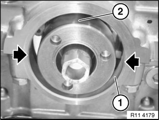</div><br><br><br><br><span class='indent-2'>&#09;</span>Graphic N42.<br><br><div class='oxe-image'>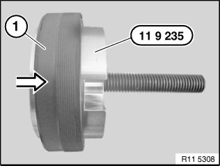</div><br><br><br><br><span class='indent-2'>&#09;</span>Push radial shaft seal (1) 11 9 235carefully in direction of arrow on the special tool.<br><br><div class='oxe-image'>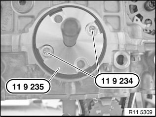</div><br><br><br><br><span class='indent-2'>&#09;</span><b>Important!</b><br><span class='indent-5'>&#09;</span>11 9 235 Special tool can only be fastened with 2 opposite bolts.<br><span class='indent-5'>&#09;</span>Determine hole pattern on special tool.<br><br><span class='indent-2'>&#09;</span>Screw special tool 11 9 235 with special tool 11 9 234 on <a href="296.html">crankshaft</a>.<br><br><div class='oxe-image'>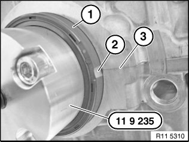</div><br><br><br><br><span class='indent-2'>&#09;</span>Align groove (2) of radial shaft seal (1) centered to the housing partition (3).<br><br><span class='indent-2'>&#09;</span><b>Important!</b><br><span class='indent-5'>&#09;</span>After installation, the grooves must be filled with sealing compound.<br><br><span class='indent-2'>&#09;</span>Draw in radial seal with special tool 11 9 231 in conjunction with special tool 11 9 233 until flush.<br><br><div class='oxe-image'>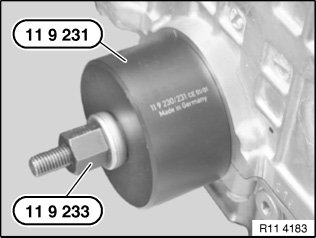</div><br><br><br><div class='oxe-image'>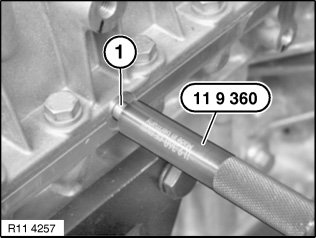</div><br><br><br><br><span class='indent-2'>&#09;</span>Drive both injector nozzles (1) on left and right with special tool 11 9 360 into crankcase up to stop.<br><br><div class='oxe-image'>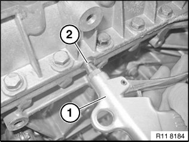</div><br><br><br><br><span class='indent-2'>&#09;</span>After fitting both sealing rings, check both sealing ducts for clearance.<br><br><span class='indent-2'>&#09;</span>Blow compressed air (1) at max. 6 bar into injector nozzle (2).<br><br><span class='indent-2'>&#09;</span>Compressed air must emerge at both sealing rings on left and right from the outlet bores.<br><br><span class='indent-2'>&#09;</span><b>Important!</b><br><span class='indent-5'>&#09;</span>If the compressed air does not flow out of all ducts. the crankcase must again be taken apart and cleaned.<br><br><div class='oxe-image'>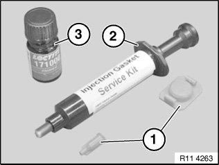</div><br><br><br><br><span class='indent-2'>&#09;</span><b>Installation:</b><br><span class='indent-2'>&#09;</span>Use primer 1.3 and liquid seal 1.4.<br><br><span class='indent-2'>&#09;</span>Prepare liquid sealing compound (1) in special tool 11 4 370.<br><br><span class='indent-2'>&#09;</span>Injector nozzles for injecting sealing compound are not required.<br><br><span class='indent-2'>&#09;</span>Slowly insert liquid sealing compound (1) with special tool 11 4 370 in direction of arrow.<br><br><span class='indent-2'>&#09;</span>Liquid sealing compound must emerge at radial shaft seals at front and rear.<br><br><div class='oxe-image'>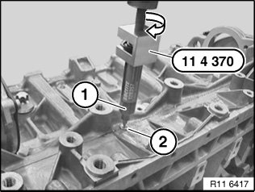</div><br><br><br><div class='oxe-image'>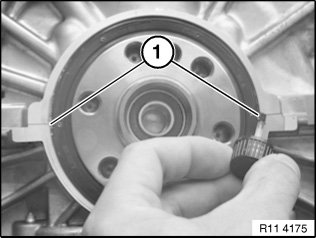</div><br><br><br><br><span class='indent-2'>&#09;</span>Stop (seal off) escaping liquid gasket with primer 1.3.<br><br><div class='oxe-image'>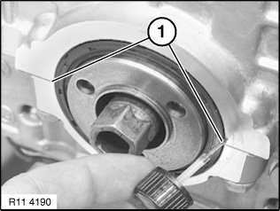</div><br><br><br><br><span class='indent-2'>&#09;</span>Stop (seal off) escaping liquid gasket with primer 1.3.<br><br><div class='oxe-image'></div><br><br><br><br><span class='indent-2'>&#09;</span>Assemble engine.<br><br><h3>�@�:</h3><div class='oxe-image'></div><br><br><br><h3>bˁ:</h3><div class='oxe-image'></div><br><br><br><h3>@��:</h3><div class='oxe-image'></div><br><br><br></div>
<div class="theme-colors footer">
  <i>pro multis</i> · <a href="../about.html">About Operation CHARM</a>
</div>
<script src="../script.js"></script>
</body>
</html>
